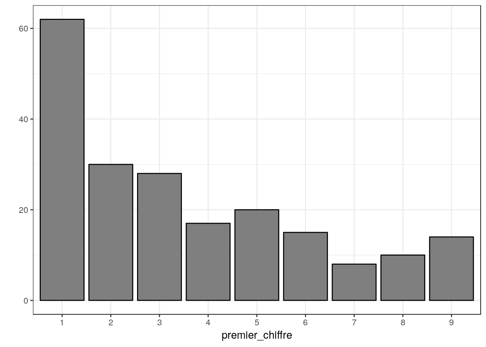
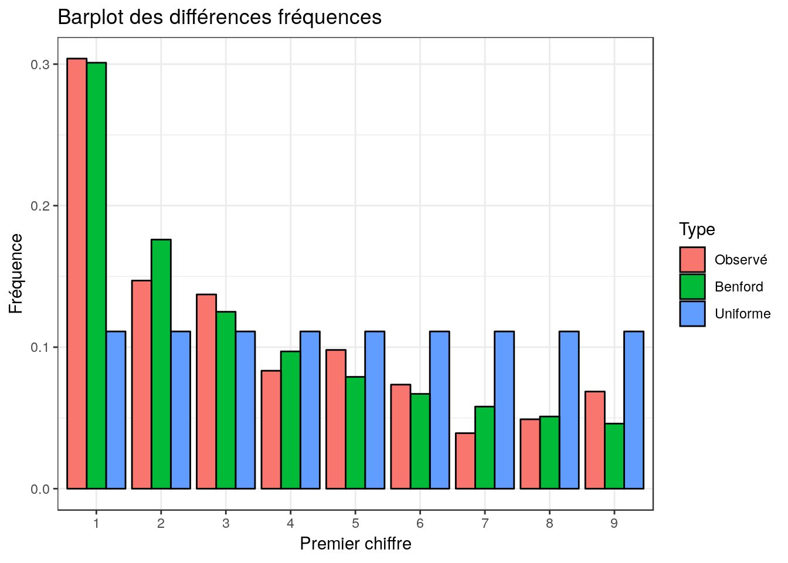

library(tidyverse)
library(rvest)
theme_set(theme_bw())df <-
"https://fr.wikipedia.org/wiki/Liste_des_pays_par_population" %>%
read_html() %>%
html_node('table') %>%
html_table() %>%
as_tibble()
df## # A tibble: 204 x 6
## Rang `Pays ou territo… `Population[Note… Date Source Commentaires
## <chr> <chr> <chr> <int> <chr> <chr>
## 1 1 Chine 1 415 045 928 2018 Offic… Pays le plus pe…
## 2 2 Inde 1 355 621 800 2018 Offic… Pays le plus pe…
## 3 • Union européenne 512 596 403 2018 Offic… L'Union europée…
## 4 3 États-Unis 328 286 400 2018 Offic… Pays le plus pe…
## 5 4 Indonésie 266 471 000 2018 Offic… Archipel le plu…
## 6 5 Pakistan 207 774 520 2017 Offic… ""
## 7 6 Brésil 207 096 196 2017 Offic… Pays le plus pe…
## 8 7 Nigeria 190 632 261 2017 CIA W… Pays le plus pe…
## 9 8 Bangladesh 160 339 154 2016 Offic… ""
## 10 9 Russie 146 544 710 2016 Offic… La population r…
## # ... with 194 more rowspop <- pull(df, `Population[Note 2]`)
head(pop)## [1] "1 415 045 928" "1 355 621 800" "512 596 403" "328 286 400"
## [5] "266 471 000" "207 774 520"premier_chiffre <- str_sub(pop, 1, 1)
head(premier_chiffre)## [1] "1" "1" "5" "3" "2" "2"qplot(premier_chiffre) + geom_bar(fill = "grey50", color = "black")
frequences <-
tibble(premier_chiffre) %>%
group_by(premier_chiffre) %>%
summarise(eff_obs = n()) %>%
mutate(freq_obs = eff_obs/sum(eff_obs)) %>%
mutate(freq_unif = 1/9,
freq_benford = c(0.301, 0.176, 0.125, 0.097, 0.079, 0.067, 0.058, 0.051, 0.046))
frequences## # A tibble: 9 x 5
## premier_chiffre eff_obs freq_obs freq_unif freq_benford
## <chr> <int> <dbl> <dbl> <dbl>
## 1 1 62 0.304 0.111 0.301
## 2 2 30 0.147 0.111 0.176
## 3 3 28 0.137 0.111 0.125
## 4 4 17 0.0833 0.111 0.097
## 5 5 20 0.0980 0.111 0.079
## 6 6 15 0.0735 0.111 0.067
## 7 7 8 0.0392 0.111 0.058
## 8 8 10 0.0490 0.111 0.051
## 9 9 14 0.0686 0.111 0.046frequences %>%
select(premier_chiffre, freq_obs, freq_unif, freq_benford) %>%
gather(-premier_chiffre, key = type, value = freq) %>%
mutate(type = factor(type,
levels = c("freq_obs", "freq_benford", "freq_unif"),
labels = c("Observé", "Benford", "Uniforme"))) %>%
print() %>%
ggplot() +
aes(x = premier_chiffre, y = freq, fill = type) +
geom_col(position = "dodge", color = "black") +
labs(x = "Premier chiffre", y = "Fréquence",
fill = "Type", title = "Barplot des différences fréquences")## # A tibble: 27 x 3
## premier_chiffre type freq
## <chr> <fct> <dbl>
## 1 1 Observé 0.304
## 2 2 Observé 0.147
## 3 3 Observé 0.137
## 4 4 Observé 0.0833
## 5 5 Observé 0.0980
## 6 6 Observé 0.0735
## 7 7 Observé 0.0392
## 8 8 Observé 0.0490
## 9 9 Observé 0.0686
## 10 1 Uniforme 0.111
## # ... with 17 more rows